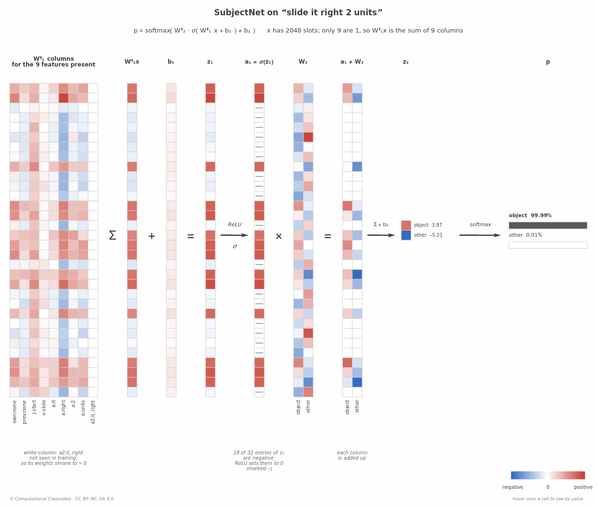

Structure
five feature groups hashed into 2048 slots of 0 or 1 → 32 hidden units (ReLU) → softmax over object and other.
Training
The loss (cross-entropy plus the weight penalty) after each of 12 epochs.
Results
| Training data (parts) | 2000 |
| Test data (parts) | 600 |
| Loss, first and last epoch | 0.0095, 0.0031 |
| Gradient check, largest difference | 1.66e-11 |
| Test 1: templates with unseen words, accuracy | 99.5% |
| Test 1: 'other' precision and recall | 1, 0.986 |
| Test 2: paragraph parts, accuracy | 47 of 47 |
| Test 3: hard sentences, accuracy | 21 of 24 |
| Test 4: paragraphs ending right | 12 of 12 (without the check: 12) |
| Test 4: paragraphs right step by step | 12 of 12 (without the check: 9) |
| Numbers in the net | 65634 |
Wrong: the lantern drifts upward 2 metres; my heart sank 2 times that day; the cameraman slowly moves left.
Inside: the trained model on one input

Aim
The motion reader (MotionParse) sometimes took a motion verb about something else as a motion of the object: "the camera holds on the kettle for a beat", "visitors often say the experience turns their sense of scale", "Mia laughed and turned to her brother". SubjectNet looks at each motion part and answers object (keep it) or other (set it aside).
Data
The sentences are written from 19 templates, each with its own label, and read by the real motion reader, so the net sees parts exactly as they arrive. There are 2,000 training parts and 600 test parts; the test nouns, names and abstract words never appear in training, so the test shows whether the net learnt sentence shape rather than words. No conversational-construct labels anything.
Design
Each part becomes a short list of features: the words before the verb (or, when there are none, the end of the part before it), how the part was joined to the one before, the verb, and the first words after it. The features are hashed into 2,048 slots of 0 or 1. Then 32 hidden units with ReLU, and a softmax over object and other: 65,634 numbers in all. It is trained with our own code (forward pass, backpropagation, Adam), written out in Wolfram and in Python, which agree to about 10⁻¹⁶.
Results
On test sentences with unseen words, 99.5% are right, and 'other' is found with precision 1.0 and recall 0.99. Every one of the 47 paragraph parts is right, and 21 of 24 deliberately hard sentences. With SubjectNet, all 12 test paragraphs are read right step by step; without it, 9 of 12.
Limits
The three hard sentences it gets wrong show its edges: "the lantern drifts upward 2 metres" (an unfamiliar subject with an unfamiliar verb), "my heart sank 2 times that day" (a figurative motion with a number), and "the cameraman slowly moves left" (a person who could be the moved thing). More templates of these kinds are the next step.
Settings of this run
| epochs | 12 |
| batch_size | 64 |
| lr | 0.005 |
| l2 | 0.0001 |
| seed | 1234 |
| hidden | 32 |
| optimiser | Adam (0.9, 0.999, 1e-8) |
| initialisation | He, seed 1234 |
| training data | 2000 template parts (seed 11) |
| test data | 600 template parts with unseen words (seed 22) |
Downloads
Built from lossofgenerality/ccn-agent-free-form-language at d2077a7, training run 2026-11-24-seed1234 (ccnlab 0.1.0, Python 3.13.18, NumPy 2.5.3, CPU).